Fields¶
Fields represent a single configuration option.
Value field¶
Contain text or numeric value, the user can enter or change directly. Value can be copied by clicking the copy button that appears when you hover over the value field.
Figure 1: Value field
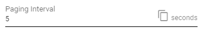Dropdown¶
Contain a selection of predefined values, the user can choose from. The value cannot be manually edited. User can also navigate in the dropdown list using arrow keys on the keyboard and confirm the selection by pressing the Enter key. The currently selected value is highlighted in bold.
Dropdowns may contain a search field, that is displayed right under the dropdown, when it’s rolled out. Items can be filtered based on the search criteria. Inserted search phrase can be cleared by pressing the button. Some Dropdowns contain dynamic values, that may change while it is opened. Such dropdowns can be refreshed using the refresh button.
Figure 3: Rolled out dropdown
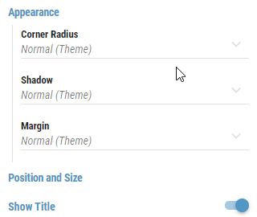Figure 4: Refreshable dropdown
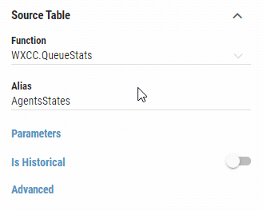Color field¶
A special type of a Value field containing a color in a HEX or RGB format. List of all supported color names is available here. A specific color name such as “red” or “blue” can also be used. Value can be copied by clicking the copy button that appears when you hover over the color field. The copied value can then be pasted only in another color field or a border style control.
A color can be chosen also through a color picker by clicking on an arrow next to a copy button or a colored square on the left side of the text field.
Figure 5: Color field
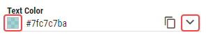The color picker consist of two panels. A list of colors (Figure 6) and a color editor (Figure 7)
Figure 6: Color picker - List of colors
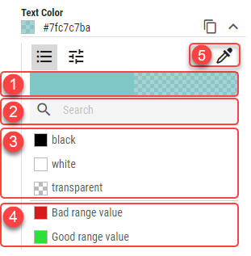Currently selected color - In case color with transparency is selected, the transparency is visualized on the right side.
Search box - Colors can be filtered using the search box. When no search phrase is entered, all available colors are displayed. Otherwise only colors containing the entered phrase are displayed.
Default colors - Default colors.
Theme colors - Colors defined on applied theme. For more information, see Theme colors chapter.
Color pipette - By clicking this button, user can pick any color from the screen by simply clicking on the targeted pixel.
Figure 7: Color picker - Color editor
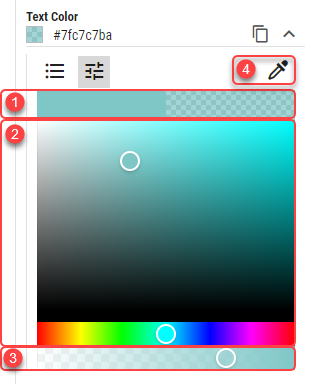Currently selected color - In case color with transparency is selected, the transparency is visualized on the right side.
Color palette - Simply click or drag and drop to a desired color.
Transparency slider - Adjusting a transparency.
Color pipette - By clicking this button, user can pick any color from the screen by simply clicking on the targeted pixel.
Borders Style¶
The style, width and color settings for the segments borders. The style of the border can be set by clicking on one of the available styles from the list on the left side of the panel. Width of the border, defined in per mille of the layouts height, can be set by editing the width field. Color can be set in HEX or RGB format by editing a text field or by opening a color dropdown. Since the inheritance applies to a whole group of settings in this dropdown, changing any of these settings overrides the inheritance. A user can apply the inherited settings by clicking on an “Inherit” button. Value can be copied by clicking the copy button that appears when you hover over the dropdown. The copied value can then be pasted only in another border style field.
Figure 8: Border Style
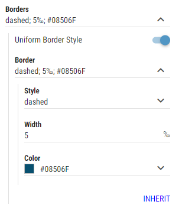- Uniform Border Style
Whether border should be applied as a single border around the entire segment.
- Border
Available only if “Uniform Border Style” is enabled.
The style, width and color of the border.
- Top
Available only if “Uniform Border Style” is disabled.
The style, width and color of the top border.
- Bottom
Available only if “Uniform Border Style” is disabled.
The style, width and color of the bottom border.
- Left
Available only if “Uniform Border Style” is disabled.
The style, width and color of the left border.
- Right
Available only if “Uniform Border Style” is disabled.
The style, width and color of the right border.
Text Style¶
A special type of a field, that defines the font to use and whether bold or italic text should be used. Value can be copied by clicking the copy button that appears when you hover over the dropdown. The copied value can then be pasted only in another text style field.
Figure 9: Text style field
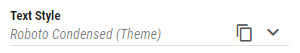The text style control consist of two panels. A list of predefined text styles on theme (Figure 10) and a text style editor (Figure 11).
Figure 10: List of text styles
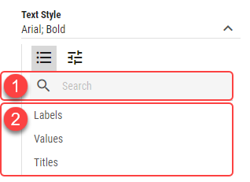Search box - Theme text styles can be filtered using the search box. When no search phrase is entered, all available text styles are displayed. Otherwise only text styles containing the entered phrase are displayed.
Theme text styles - Text styles defined on applied theme. For more information, see Theme text styles chapter.
Figure 11: Text style editor
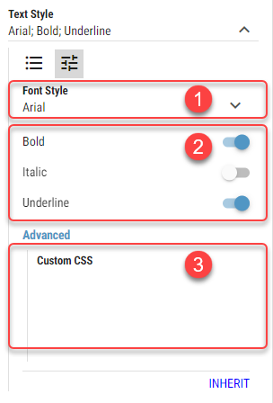Available Fonts - List of available fonts. Custom font can be defined by typing into the dropdown.
Bold/Italic/Underline - Whether bold, italic or underlined text should be used.
Custom CSS - Customize the text using a CSS properties.
Example:
text-decoration: underline; text-decoration-color: green; text-decoration-style: solid;
Makes the text look like following:
{kind=link}
Since the inheritance applies to a whole group of settings in this dropdown, changing any of these settings overrides the inheritance. A user can apply the inherited settings by clicking on an “Inherit” button.
Shadow Style¶
A special type of a field, allowing user to adjust the shadow of the segment. Value can be copied by clicking the copy button that appears when you hover over the dropdown. The copied value can then be pasted only in another shadow style field. Since the inheritance applies to a whole group of settings in this dropdown, changing any of these settings overrides the inheritance. A user can apply the inherited settings by clicking on an “Inherit” button.
Figure 12: Shadow style field
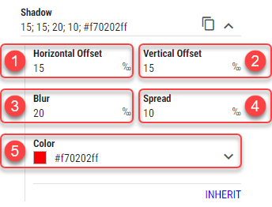- Horizontal Offset
Horizontal distance of the shadow from the segment. Measured in permilles of the entire Layout’s height.
- Vertical Offset
Vertical distance of the shadow from the segment. Measured in permilles of the entire Layout’s height.
- Blur
A shadows blur. Measured in permilles of the entire Layout’s height.
- Spread
Distance by which to expand a shadow in all directions. Measured in permilles of the entire Layout’s height.
- Color
For more information see Color field section.
Color of the shadow.
Custom Display Format¶
When “Custom” is selected as a Display Format, custom format, in which value should be displayed can be defined.
Figure 13: Custom display format field
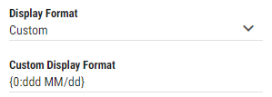For more information see Microsoft documentation for Numeric, Timespan or Date and Time format
Example:
Numeric
Percent {0:P} -> 100%
Currency: {0:C} -> $87
TimeSpan
d’d ‘hh’:’mm’:’ss’.’fff -> 1d 11:36:18.283
Date and Time
{0:HH:mm:ss MM/dd/yyyy} -> 12:36:22 10/03/2022
{0:ddd MM/dd} -> Sat 10/22
Expression builder¶
Expression builder is used to compose expression which can contain DW placeholders. Expression can not be edited directly in field instead is editable through dialog which is opened by double clicking the field or clicking the pen icon.
Dialog consists of text area, where expression is editable, and list of available placeholders. Clicking any placeholder will add this placeholder, in correct format, to the text area at the cursor current position. Format of placeholders in expression is placeholder.
In case of using KPI custom calculation function, format of placeholders in expression is {{placeholder}}.
Figure 14: Expression field
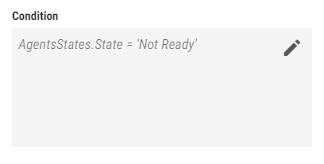Figure 15: Expression dialog
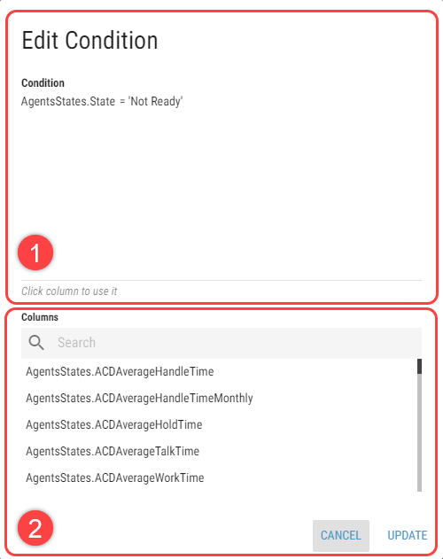Text area
List of Placeholders
Option, associated with expression builder, will be updated after clicking dialog’s Update button.